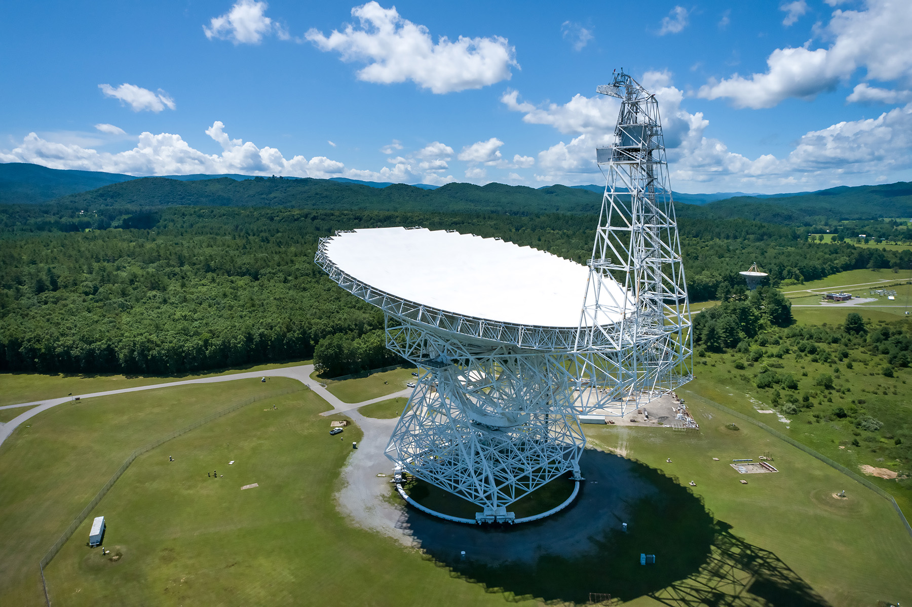
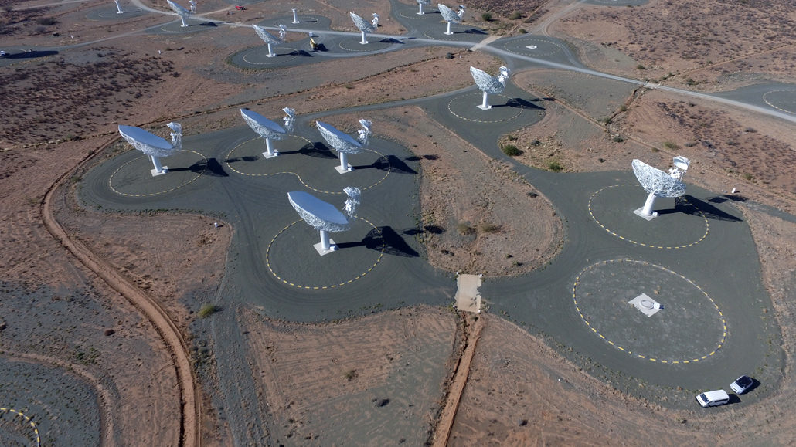

Durante sesenta años, SETI fue esencialmente un problema de aguja y pajar. El pajar: el espectro de radio del universo, miles de millones de frecuencias posibles, miles de millones de estrellas donde mirar. La aguja: una señal artificial, estrecha, intensa, repetible, que no pudiera producir ningún fenómeno natural conocido. El problema no era saber qué buscar. Era que el pajar era demasiado grande para cualquier herramienta que los humanos pudieran usar.
La inteligencia artificial cambió eso. No de golpe, no con una sola detección que lo resolviera todo, sino de manera más sutil y más profunda: cambió la escala de lo que es posible buscar, el tipo de señal que podemos detectar y, lo que quizás es más importante, el tipo de preguntas que estamos en condiciones de hacer.
Lo que sigue es un mapa de ese cambio: dónde estábamos, dónde estamos, qué promete la IA y dónde exactamente pueden salir mal las cosas.
De dónde venimos: SETI clásico y sus límites
El Proyecto Ozma de 1960 —la primera búsqueda sistemática de señales de radio de origen inteligente— apuntó el radiotelescopio de Green Bank hacia dos estrellas cercanas durante unas pocas semanas. No encontró nada. Lo que sí estableció fue un paradigma que duraría décadas: buscar en la banda del hidrógeno neutro (21 cm, 1420 MHz), porque cualquier civilización tecnológica entendería que es la frecuencia más universal del universo. Buscar señales estrechas y potentes, porque eso es lo más difícil de producir de forma natural. Buscar con paciencia, porque quizás simplemente todavía no habíamos mirado en el lugar correcto.

// Referencia técnica · La banda del agua · Por qué 1420 MHz
La lógica del canal cósmico más obvio
El hidrógeno neutro emite radiación de radio a exactamente 1420.405 MHz. Es el elemento más abundante del universo. Cualquier civilización con radioastronomía básica conocería esa frecuencia. Flanqueándola está la línea del hidróxido (OH) a 1612–1720 MHz. Juntos, H + OH = H₂O. Los astrónomos llamaron a esa región del espectro "la banda del agua" y razonaron que sería el lugar natural donde dos civilizaciones tratarían de contactarse. No ha funcionado en 60 años, pero la lógica sigue siendo difícil de rebatir.
El problema: una civilización lo suficientemente avanzada podría no usar radio en absoluto. O podría usar modulaciones tan complejas que las señales parezcan ruido blanco a nuestros instrumentos. O podría estar usando óptica, neutrinos, o canales que ni siquiera hemos conceptualizado todavía.
El problema fundamental del SETI clásico era computacional. Un radiotelescopio registra cantidades astronómicas de datos. Procesar eso con la potencia de cómputo disponible en los años 60, 70, 80 o incluso 90 significaba analizar una fracción ínfima del espacio de señales posible. SETI@Home, lanzado en 1999, fue el primer intento serio de resolver eso con computación distribuida: millones de computadores personales en todo el mundo procesando fragmentos de datos del telescopio de Arecibo. Funcionó. Pero no era suficientemente flexible ni suficientemente inteligente para buscar cosas que los científicos no habían predefinido con precisión.
"Durante décadas buscamos bajo la farola porque era donde había luz. La IA nos permite buscar en la oscuridad."
— Jill Tarter · Fundadora y ex directora del Instituto SETI · 2024// Cronología · SETI · De Ozma a la era de la IA
// 1960
Proyecto Ozma · El comienzo
Frank Drake apunta el radiotelescopio de Green Bank hacia Tau Ceti y Epsilon Eridani durante unas semanas. Sin detecciones. Establece la banda del hidrógeno como canal de búsqueda.
// 1977
La señal "Wow!" · El momento más cerca
Jerry Ehman detecta en el radiotelescopio Big Ear una señal de 72 segundos en 1420 MHz que encaja perfectamente con lo que SETI buscaba. Escribe "Wow!" en el margen. Nunca se volvió a detectar.
En agosto de 2025, un reanálisis con computación moderna (Méndez et al.) elevó su intensidad estimada a 250 Janskys — más alta de lo que se creía — y descartó definitivamente origen terrestre o del sistema solar. La hipótesis natural más sólida: una nube de hidrógeno interestelar amplificada por un fenómeno de "superradianza".
Ese mismo mes, Avi Loeb señaló que las coordenadas de la señal coinciden con la posición que tenía 3I/ATLAS el 15 de agosto de 1977, y propuso apuntar radiotelescopios al objeto interestelar. Hasta la fecha, ningún telescopio ha reportado datos de radio de 3I/ATLAS.
// 1999
SETI@Home · Computación distribuida
UC Berkeley lanza el primer proyecto de computación ciudadana a gran escala. Más de 5 millones de usuarios prestan su CPU para procesar datos de Arecibo. Se detectan candidatos interesantes, ninguno confirmado.
// 2015
Breakthrough Listen · $100 millones y una nueva era
Yuri Milner y Stephen Hawking anuncian la iniciativa más ambiciosa de SETI hasta la fecha: diez años, 100 millones de dólares, acceso a los mejores telescopios del mundo, y datos abiertos al público. El archivo de BL se convierte en el conjunto de datos SETI más grande de la historia.
// 2020–2023
Machine Learning llega a los archivos
Investigadores aplican redes neuronales convolucionales y transformers a los datos de BL. Los primeros resultados son dramáticos: el ML detecta 8 señales candidatas que los algoritmos tradicionales habían ignorado en los mismos datos. Ninguna confirmada aún, pero el patrón de detección cambia radicalmente.
// 2025–2026
IA generativa entra al debate
Los modelos de lenguaje grande (LLMs) empiezan a usarse para analizar señales candidatas, generar hipótesis sobre tecnosignaturas y procesar literatura científica a escala. Simultáneamente, el campo empieza a preguntarse si la IA podría producir falsos positivos más convincentes que cualquier ruido natural.
Lo que la IA hace diferente: tres cambios reales
Hay mucho hype en torno a la IA aplicada a SETI. Para entender qué es real y qué no, conviene separar los cambios concretos que ya están ocurriendo de las promesas más especulativas.
// Escala de análisis · SETI clásico vs IA · Estrellas procesadas por año
Escala logarítmica implícita · Las barras muestran órdenes de magnitud, no valores exactos · Fuentes: SETI Institute, Breakthrough Listen, IEEE Spectrum 2024
// Cambio 1 · Escala: de miles a millones de estrellas
El cambio más inmediato y verificable es cuantitativo. Los algoritmos de machine learning pueden procesar en horas los datos que antes requerían años. El radio-telescopio MeerKAT en Sudáfrica, combinado con pipelines de IA desarrollados por el equipo de Breakthrough Listen, analizó más de un millón de estrellas en un solo proyecto en 2023. Para poner eso en perspectiva: SETI había estudiado en total unas pocas decenas de miles de estrellas en sus primeras cuatro décadas.
Esto no significa solo que buscamos más. Significa que podemos buscar de forma estadísticamente significativa. Si hay señales y ocurren con alguna frecuencia detectable en nuestra galaxia, una búsqueda de millones de estrellas empieza a ser el tipo de muestra que puede producir detecciones reales, o ausencias de detección que digan algo sobre los límites superiores de la actividad tecnológica en la Vía Láctea.

// Cambio 2 · Tipos de señal: más allá de lo que podemos describir con reglas
El segundo cambio es más profundo. Los algoritmos tradicionales de SETI buscan patrones predefinidos: señales de banda estrecha, señales con deriva Doppler específica, pulsos con periodicidad. El problema es que solo puedes encontrar lo que buscas. Si una civilización avanzada usa modulaciones que no hemos conceptualizado —señales que parecen ruido blanco a nuestros algoritmos actuales, pero que tienen estructura interna compleja— los sistemas clásicos las ignorarán.
Las redes neuronales profundas aprenden a detectar patrones sin que el investigador tenga que especificarlos de antemano. En 2023, un equipo de UC Berkeley reentrenó modelos de visión por computadora —originalmente diseñados para reconocer objetos en imágenes— para identificar anomalías en espectros de radio. El resultado fueron 8 señales candidatas encontradas en datos archivados de Breakthrough Listen que los métodos anteriores habían clasificado como ruido.
// Paper de referencia · Smith et al. · Nature Astronomy · 2023
Aplicamos una red neuronal convolucional entrenada para distinguir interferencia de radiofrecuencia (RFI) de señales genuinamente anómalas. De 480 horas de observación de 820 estrellas, el modelo recuperó ocho señales que los pipelines convencionales habían marcado como RFI. Las ocho presentan características compatibles con señales de origen tecnológico: estrechez espectral, deriva Doppler positiva y ausencia de contrapartes en el lóbulo secundario del haz. Ninguna ha podido ser confirmada por reobservación hasta la fecha de publicación.
Fuente: Smith, P.C.T. et al. (2023). "A Deep-Learning Search for Technosignatures from 820 Nearby Stars." Nature Astronomy, vol. 7.// Cambio 3 · Tecnosignaturas más allá de la radio
El tercer cambio es el más ambicioso, y también el más incierto. La IA permite buscar tecnosignaturas —evidencias de tecnología— que no son señales de comunicación deliberada. Una megaestructura tipo esfera de Dyson alteraría el espectro de luz de su estrella de maneras sutiles pero detectables. Una red de satélites de alto albedo produciría variaciones periódicas en el tránsito estelar. La polución lumínica industrial en un planeta en tránsito dejaría huella en el espectro atmosférico. Ninguna de estas búsquedas es trivial, pero todas son computacionalmente más abordables con IA que sin ella.
El telescopio James Webb, operativo desde 2022, produce espectros atmosféricos de exoplanetas con una precisión sin precedentes. Analizar esos espectros para detectar gases de origen tecnológico —fluorocarbonos, óxido nítrico en concentraciones inusuales— requiere procesar cantidades masivas de datos con modelos capaces de distinguir firma química de contaminación instrumental. Eso es exactamente el tipo de tarea donde los modelos de ML son superiores a los métodos manuales.
// Mapa de búsqueda · Tecnosignaturas detectables con IA · 2026
| Tecnosignatura | Instrumento | Rol de la IA | Estado actual |
|---|---|---|---|
| Señales de radio estrechas | MeerKAT, GBT, FAST | Clasificación, separación de RFI | Operativo · 8 candidatos sin confirmar |
| Señales ópticas / láser | PANOSETI, Obs. Lick | Detección en tiempo real de pulsos nanométricos | Activo · Sin detecciones |
| Anomalías de tránsito estelar | Kepler, TESS, Plato | Identificación de curvas de luz irregulares | Tabby's Star: candidata sin explicación definitiva |
| Firma química atmosférica | James Webb JWST | Análisis espectral de fluorocarbonos, NO₂ | En desarrollo · Primeros espectros procesados |
| Exceso de infrarrojo (Dyson) | WISE, Spitzer, JWST | Detección de exceso IR anómalo en catálogos | Búsquedas sistemáticas en curso · Sin confirmación |
| Objetos interestelares anómalos | LSST/Vera Rubin, ATLAS | Clasificación de trayectorias, análisis de forma | ʻOumuamua (2017), Borisov (2019), 3I/ATLAS (2025) |
| Technosignaturas de radio en exoplanetas | SKA (2027+) | Pipeline ML de análisis masivo | Previsto · Instrumento en construcción |
Las voces del campo: quién hace qué
Steve Croft
Astrónomo · Breakthrough Listen · UC Berkeley
Hemos pasado de ser un campo donde cada detección potencial requería meses de análisis manual a uno donde los pipelines de ML procesan observaciones en tiempo real. Eso cambia completamente la lógica de cómo organizamos las búsquedas. Antes teníamos que elegir con mucho cuidado dónde mirar porque el análisis era caro. Ahora el cuello de botella está en el tiempo de telescopio, no en la capacidad de procesar lo que vemos.
Sofia Sheikh
Astrofísica · SETI Institute · Proyecto Telescope
El desafío más interesante ahora no es técnico sino conceptual: ¿cómo entrenamos a un modelo para que detecte algo que nunca hemos visto y que, por definición, no tenemos en nuestros datos de entrenamiento? Los autoencoders y los modelos de detección de anomalías son prometedores precisamente porque no buscan una firma específica, sino desviaciones de lo esperado. Pero "lo esperado" lo definimos nosotros, y eso sigue siendo un sesgo humano enorme.
Andrew Siemion
Director · Breakthrough Listen · Hat Creek Radio Observatory
El telescopio FAST en China tiene una sensibilidad que Arecibo no podía soñar, y ya está colaborando en búsquedas SETI. Cuando SKA esté operativo, hablaremos de un instrumento que puede hacer en un día lo que los proyectos anteriores hacían en décadas. El problema es que eso también multiplica el volumen de datos por factores que hacen imposible cualquier análisis que no sea automático. La IA no es opcional para el futuro de SETI. Es el requisito básico de infraestructura.
// Espectro electromagnético · Zonas activas de búsqueda SETI · 2026
El espectro es una representación esquemática no a escala · Las zonas de búsqueda son aproximadas · Fuentes: SETI Institute, Breakthrough Listen, NASA Technosignatures Workshop 2024
Las nuevas trampas: dónde puede fallar todo esto
Sería irresponsable hablar de lo que la IA promete sin dedicar el mismo espacio a lo que puede salir mal. Y en SETI, las consecuencias de un error en cualquier dirección son asimétricas y enormes. Un falso negativo —ignorar una señal real— significaría perder el mayor descubrimiento de la historia humana. Un falso positivo —anunciar una detección que no existe— causaría uno de los escándalos científicos más devastadores imaginables.
// Alerta · Las cinco trampas principales de la IA en SETI
Por qué más capacidad no es lo mismo que más verdad
Trampa 1 · El problema del entrenamiento. Los modelos de ML aprenden de datos etiquetados por humanos. Para SETI, eso significa que los datos de "señal real" son inexistentes (nunca hemos detectado una) y los de "señal falsa" son interferencias terrestres de radio (RFI). El modelo aprende a distinguir señales de RFI humana, no señales de RFI humana de señales extraterrestres. Es una distinción crucial que a menudo se borra en los titulares.
Trampa 2 · Overfitting al ruido. Los modelos suficientemente complejos pueden aprender patrones en el ruido que no existen. Cuanto más grande el modelo y más pequeño el conjunto de datos de validación, mayor el riesgo. En SETI, donde los conjuntos de datos son grandes pero el "ground truth" es inexistente, este riesgo es estructural.
Trampa 3 · La trampa de los "8 candidatos". Cuando un modelo detecta anomalías sin que podamos reobservarlas (porque el objeto se ha movido, porque el telescopio no está disponible, porque la señal no se repite), la candidatura queda en limbo indefinido. El riesgo es que el campo acumule decenas de candidatos no confirmados y no descartados que creen una ilusión de progreso sin evidencia real.
Trampa 4 · Sesgo de confirmación amplificado. Si un investigador entrena un modelo con la hipótesis de que las señales alienígenas serán "similares a X", el modelo encontrará cosas similares a X. La IA puede amplificar nuestros sesgos cognitivos a escala industrial.
Trampa 5 · La presión mediática de los falsos positivos. En la era de los LLMs y la IA generativa, es técnicamente posible construir señales artificiales convincentes que pasen filtros automatizados. Un actor malicioso —o simplemente un error de sistema— podría producir un "candidato" que pase los primeros niveles de análisis y llegue a los medios antes de ser descartado. El protocolo de verificación no ha escalado al mismo ritmo que las capacidades de detección.
"Una señal que no podemos verificar no es una detección. Es una hipótesis de trabajo. La IA nos da millones de hipótesis de trabajo. El problema es que seguimos teniendo muy pocas formas de convertirlas en hechos."
— Jill Tarter · Conversación con Nature · 2024El problema de la verificación: lo que la IA no puede resolver
Hay una asimetría estructural en SETI que la IA no resuelve: detectar es barato, verificar es caro. Un modelo de ML puede señalar mil candidatos en una noche de observación. Confirmar o descartar cada uno requiere tiempo de telescopio, reobservaciones coordinadas, comparación entre instrumentos. El tiempo de telescopio es finito y está sobredemandado. Y el protocolo internacional para el caso de una detección real —el llamado "Post-Detection Protocol" de la IAU— no fue diseñado para un mundo donde la detección de candidatos ocurre a velocidad industrial.
El mayor riesgo no es que la IA produzca un falso positivo dramático. Es que normalice una economía de candidatos no verificados que ningún telescopio tiene tiempo de seguir y ningún organismo tiene capacidad de adjudicar. El campo podría quedar atrapado en un estado intermedio permanente: demasiadas señales posibles para ignorar, demasiadas inconclusas para que alguna cuente como descubrimiento.
Lo que la IA transformó
- La escala de búsqueda: de miles a millones de estrellas analizadas por año
- Los tipos de señal buscada: patrones no predefinidos por humanos
- El tiempo de análisis: de meses a horas por observación
- Las tecnosignaturas no-radio: IR, óptico, espectros atmosféricos
- El costo marginal de incluir más fuentes en los catálogos
Lo que la IA no resuelve
- La escasez de tiempo de telescopio para verificar candidatos
- El sesgo de entrenamiento: no tenemos datos de señales reales
- El protocolo de verificación: sigue siendo lento, manual y costoso
- El problema de la "señal que solo pasa una vez"
- La distinción entre anomalía y artefacto desconocido de la naturaleza
Lo que nadie sabe todavía
- Si las civilizaciones avanzadas emiten en frecuencias que no hemos considerado
- Si los LLMs pueden contribuir a la interpretación de señales, no solo a la detección
- Si el SKA producirá detecciones o simplemente más candidatos sin confirmar
- Si una IA suficientemente avanzada podría reconocer una señal que ningún humano reconocería como tal
- Y si encontramos algo, si tendremos el consenso para llamarlo "detección"
El horizonte: SKA, JWST y la próxima década
El Square Kilometre Array, que comenzará operaciones completas alrededor de 2027–2028, cambiará de nuevo la escala del problema. Con más de 130.000 antenas distribuidas en dos continentes, el SKA producirá datos a una velocidad que hace que los archivos actuales de Breakthrough Listen parezcan un bloc de notas. Analizar ese flujo sin IA es literalmente imposible. Y la sensibilidad del instrumento significa que, si hay señales de radio de origen tecnológico en nuestra galaxia a distancias moderadas, el SKA probablemente las detectará.
Mientras tanto, el JWST continúa acumulando espectros atmosféricos de exoplanetas con una precisión que hace cinco años era ciencia ficción. En 2025, el telescopio publicó el espectro más detallado hasta la fecha de un planeta en zona habitable —K2-18b— mostrando posibles trazas de dimetilsulfuro, un compuesto producido por organismos vivos en la Tierra. No es evidencia de vida. Es evidencia de que los instrumentos están llegando al umbral de sensibilidad donde detectar biosignaturas —y quizás tecnosignaturas— es técnicamente posible.
.png)
La próxima década es, razonablemente, la más importante en la historia de SETI. No porque la detección sea inminente —eso nadie puede saberlo— sino porque por primera vez los instrumentos y los algoritmos están a la altura de la ambición del campo. Si hay algo que encontrar y si nuestros modelos de cómo buscarlo son correctos, el SKA combinado con IA es el tipo de sistema que podría encontrarlo.
Si no encuentran nada, eso también será un resultado extraordinario. Un SKA que estudia cien millones de estrellas sin detectar señales tecnológicas pone límites superiores muy estrictos sobre la prevalencia de civilizaciones emisoras en la galaxia. Eso no responde la pregunta de si estamos solos. Pero sí cambia radicalmente el espacio de respuestas posibles.
"La ausencia de señal del SKA sería el resultado más perturbador de todos. Significaría que o bien nadie emite, o bien emiten de maneras que no podemos detectar todavía, o bien hay algo fundamentalmente roto en nuestra lógica de búsqueda."
— Sofia Sheikh · Instituto SETI · 2025// Preguntas que siguen abiertas
- ¿Las 8 señales candidatas detectadas por ML en los datos de Breakthrough Listen son anomalías naturales, interferencias terrestres no identificadas, o algo más? La reobservación sigue pendiente.
- ¿Pueden los modelos de IA detectar señales que son estructuralmente irreconocibles para nosotros —es decir, que parecen ruido porque no entendemos su lógica de codificación?
- ¿El protocolo de verificación de la IAU está preparado para un mundo donde se producen decenas de candidatos por semana?
- Si el JWST confirma dimetilsulfuro en K2-18b, ¿cómo distinguimos biosignatura de tecnosignatura en un espectro atmosférico?
- ¿Debería la búsqueda de tecnosignaturas con IA ser un campo independiente del SETI de señales de radio, con financiamiento y protocolos propios?
- Y si el SKA no detecta nada en diez años de búsqueda, ¿qué conclusión estamos dispuestos a sacar?
// Comentarios